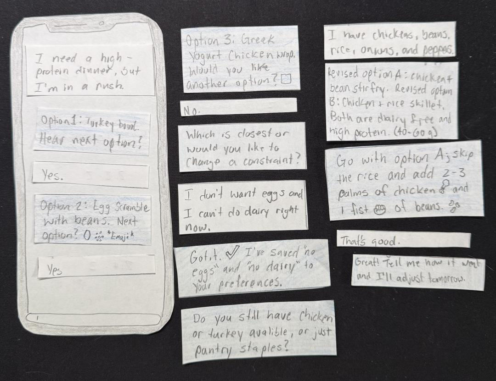
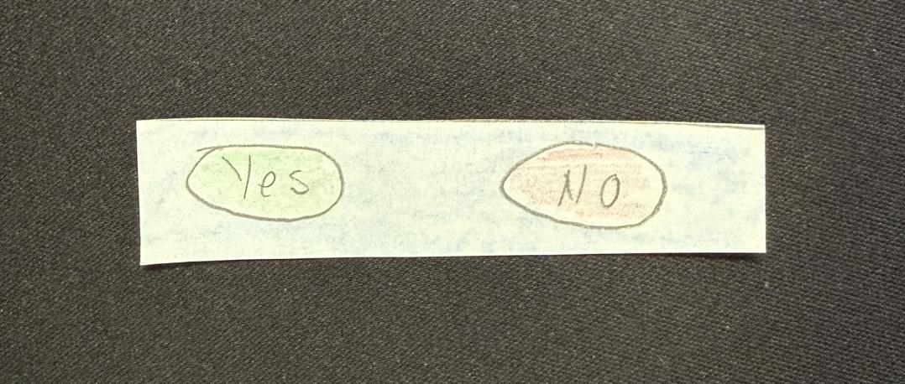

Nutrition Support Assistant
Can the right conversational structure reduce the cognitive load of deciding what to eat, for someone too tired to think about it?

People know more about nutrition than they can act on. The gap widens exactly when support matters most.
I designed a chat-based nutrition assistant around a two-phase conversational model, a short intake followed by recommendations delivered one at a time, then evaluated it with eleven participants in Wizard-of-Oz sessions, measuring cognitive load with the NASA Task Load Index.
Composite workload landed at roughly a third of maximum and held steady regardless of how tired participants were. The more useful finding was one I didn't go looking for: the features that made the assistant effortless for novices actively annoyed experts.
Problem
Dietary adherence rarely fails from a lack of knowledge. It fails in the moment of decision, when options are too numerous, tracking demands too much, and there's no bandwidth left to evaluate anything after a long day. I call it the translation gap: the distance between what a person knows about nutrition in the abstract and what they can act on right now.
I'd watched this pattern for six years of coaching. Outcomes improved when support reduced load: a small number of actionable choices, brief explanations, and low-friction portion heuristics built on hand sizes. Those observations became the design hypotheses.
Conversational interfaces are a plausible fit because they meet users at the decision point, collecting context through lightweight dialogue and returning something actionable in the same exchange. Three questions framed the study: does a two-phase structure reduce perceived cognitive load, do explanations and nutrient estimates build trust, and where does the flow create friction?
“The translation gap: the distance between what a person knows about nutrition in the abstract, and what they can act on in a given moment.”
Project framing
Process
I ran a Wizard-of-Oz study, playing the chatbot myself. The prototype was hand-written dialogue on paper, cut into modular strips I could re-sequence live. When participants went off script, I wrote new responses on blank strips mid-session, preserving the illusion of a system that adapts. Across eleven sessions that happened 24 times, and those improvisations turned out to be the most valuable data in the study.
Two earlier rounds of testing shaped five design features:
- Heuristic portioning. Hand-based estimates like “2-3 palms of chicken.”
- Information chunking. One meal option at a time, gated behind “Hear next option?”
- Emoji reinforcement. Visual cues beside portion text for faster scanning.
- Quick replies. Tappable Yes/No to cut typing effort.
- Explicit memory confirmations. The system says what it saved, out loud.

Each session ran about fifteen minutes across two scenarios. The first tested intake and refinement. The second tested something harder: a fatigue-driven pivot, where the participant abandons cooking mid-conversation, says “I'm too tired to cook,” and the assistant has to follow them to fast food without moralizing about it.

Findings
Composite cognitive workload averaged 9.64 out of a possible 28, about 34% of maximum, and was nearly identical between the high-fatigue and low-fatigue groups (9.83 versus 9.40). The design reduces load evenly across fatigue levels. Participants credited chunking most often: one option at a time gave them a sense of control and turned reception into user-paced exploration.
Tone scored highest of anything measured, 4.64 out of 5, with ten of eleven participants rating it a perfect 5. The moment that earned it was the pizza pivot. When participants gave up on cooking and the assistant answered “No problem. We can pivot,” they visibly relaxed. Several laughed. Several said it was the reason they'd use it again: the system was working with the evening they actually had.
“No problem. We can pivot.” The one line that produced visible relief at every fatigue level.
Scenario 2 · the fast-food pivot
Trust in recommendations was the lowest-scoring item at 3.45 of 5, and digging into why produced the study's most interesting result. Portion format preference split hard along expertise lines, the widest variance of any measure I collected.
The features that made the assistant effortless for its target audience, heuristic portions and broad nutrient ranges and chunked delivery, were precisely the features that frustrated users who had already internalized precise tracking. That tension is the central design challenge for nutrition conversational agents, and naming it clearly was worth more than a cleaner result would have been.
The study produced four design implications:
- Adaptive precision by expertise. Heuristics by default, gram-level detail behind an accessible toggle.
- Upfront restriction intake. Participants with dietary restrictions generated the most script deviations and the most incomplete scenarios.
- Explicit memory duration. “Saved for tonight” versus “Saved for all future sessions” closes an ambiguity several participants raised unprompted.
- Scale to a functional prototype. An LLM backend would test whether low load survives real-time generation.
Reflection
The broader principle here is that decision burden is better reduced through conversational structure than through information restriction, a pattern I'd expect to generalize to other decision-fatigue domains like financial planning or healthcare navigation.
The limitations are real and worth stating plainly: a convenience sample of eleven, single-session evaluation, and the experimenter effects inherent to playing the system yourself. The advanced-user subgroup was two people, far too small to conclude anything from, though the pattern was directionally clear enough to shape my top recommendation.
What I'd do differently is treat expertise as a planned variable and test the split deliberately. I recruited for fatigue and got the fatigue answer I expected; the finding that actually changed the design came from a variable I hadn't planned to examine. The next step is the functional prototype, which is what I'm building now as MindfulWill's nutrition planner.